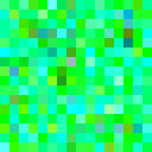
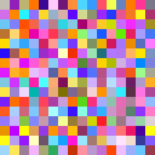
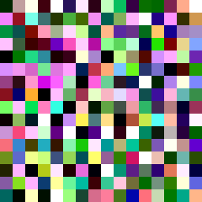
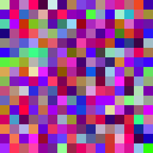
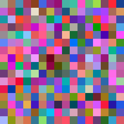

Target gzip = 0.30

- final gzip
- 0.277
- preq length
- 2.70
- generations
- 600
Low-complexity dynamics: large solid regions, slow drift.
What dynamics fall out of a (μ+λ) evolution strategy when we explicitly target a gzip-compression ratio? Below: six runs that share everything except the target compressibility of the rollout.
preq_length × gaussian-band gate around a
target gzip ratio: exp(-(gzip - target)2 / (2·0.22)).preq_length is the prequential length: a linear probe is
fit on rollout transitions, and we sum the per-step MSE above the final
loss floor — high values mean the dynamics are not trivially
predictable by the probe.preq_length we saw came at target=0.85
(preq ≈ 10.7), not at the chaotic end. Pushing for fully
uncompressible noise (target=1.0) doesn't buy more probe-difficulty.Each card: the 256-step rollout of the best-ever individual from that run, plus the final achieved gzip ratio and prequential length. Click the extended link for the 1000-step continuation.

Low-complexity dynamics: large solid regions, slow drift.
Structured but active — textured cells with local motion.

Below-target gzip and low preq — this one likely hit a poor local optimum.

Peak preq length in the sweep. Rich travelling-pattern dynamics.

Near-chaotic flicker; gzip plateaus below the target even with 2× the generations.

Maximum-noise objective. Achieved gzip caps around 0.89 — the apparent ceiling for this NCA.
{kind=link}
{kind=link}
{kind=link}
{kind=link}
{kind=link}
{kind=link}
{kind=link}
{kind=link}
{kind=link}
{kind=link}
{kind=link}
{kind=link}